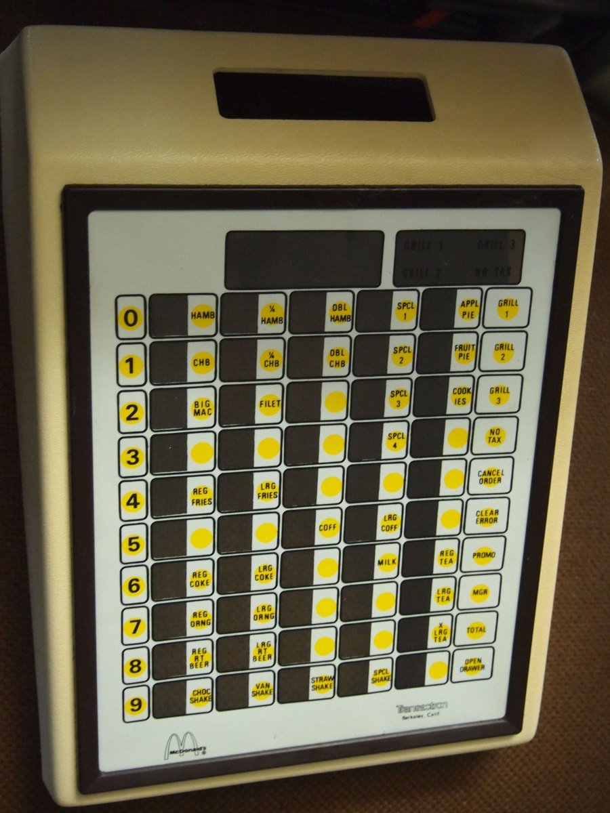

McDonald's Brobeck Point-of-Sale Terminal
The register where the menu is the keyboard — one physical button for every menu item, no prices typed

Overview
The McDonald's point-of-sale terminal, built by William Brobeck and Associates in 1974 and deployed through the 1980s, is one of the first microprocessor-controlled cash register systems. It ran on the Intel 8008, an early microprocessor that preceded the 8088 used in the original IBM PC. Each station in a restaurant was a self-contained device that displayed an entire customer's order — for example [2] Vanilla Shake, [1] Large Fries, [3] Big Mac — assembled with a numeric keypad for quantities plus a dedicated physical button for every menu item.
### A button for every menu item
The defining interaction is that each menu item had its own physical key — Big Mac, Large Fries, Vanilla Shake — and the numeric keypad supplied the quantity. Pressing [3] then [Big Mac] entered three Big Macs. There was no numeric price entry for menu items; the buttons were the menu. The keyboard surface itself carried the menu, with the printed item names identifying each button. It is a full software interface rendered as hardware: the order-entry logic of a modern touchscreen collapsed into a grid of hard, labeled buttons.
### The [Grill] button and multi-order flow
A [Grill] button let a second or third order be worked on while the first transaction was still in progress — a primitive form of concurrent order handling that anticipated modern kitchen and order-queue flows. When the customer was ready to pay, the [Total] button calculated the bill including sales tax for almost any jurisdiction in the United States, giving McDonald's accurate totals and an automatic check on what should be in the cash drawer.
### Reliability by redundancy
Up to eight devices connected to one of two interconnected computers, so printed reports, prices, and taxes could be handled from any device by putting it into Manager Mode. Accuracy was enhanced with error-correcting memory, three copies of all important data, and many numbers stored only as multiples of 3; if one computer failed, the other could handle the entire store. The system was in use from the mid-1970s through the 1980s, when the touchscreen POS era (ViewTouch, 1986) began to supersede it.
### Why it belongs
McDonald's Brobeck terminal is the physical inversion of the museum's ViewTouch touchscreen: where ViewTouch draws menu buttons in software on glass, the Brobeck machine renders the same idea as a physical grid of buttons. It is also the stranger cousin of the IBM 5265's paper-drum register — both are pre-screen registers, but the 5265 walked the cashier through a transaction with printed prompts while the Brobeck machine made the menu itself the keyboard. It is the museum's clearest example of "the interface is the menu" and a commercially massive, interaction-model-rich artifact of the transition from mechanical cash registers to programmable ones.
Deep dive
Team & pioneers
- William Brobeck and Associates. Oakland, California engineering firm that designed the McDonald's POS system in 1974.
- McDonald's Restaurants. Client and deploying organization; deployed thousands of terminals across US restaurants through the 1980s.